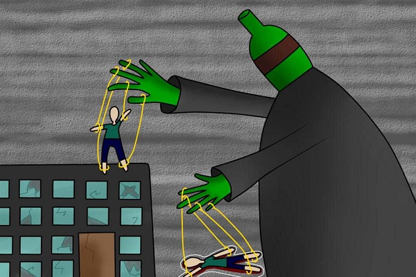

Признаки перехода болезни в третью стадию:
- мгновенное опьянение после первого же глотка спиртного;
- снижение суточной дозы алкоголя ~ в 2 раза;
- катастрофическое сокращение промежутка между приёмом алкоголя и развитием абстиненции, сразу же отягощённой делирием, т.е. многократное усиление физической зависимости.
Изменения в личности приводят к алкогольному слабоумию и деградации (придирки к окружающим по мелочам, шутки на тему туалета и половых органов). Человека практически ничего не интересует, кроме принятия всё новых и новых доз алкоголя.
Из-за безответственного отношения к своим обязанностям алкоголик теряет работу и нередко семью.